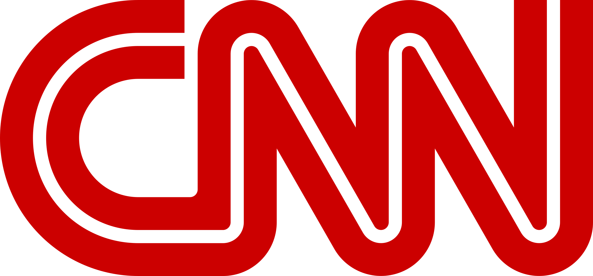

|
Wirtualna Polska (WP) – pierwszy polskojęzyczny serwis internetowy, założony w 1995 roku. Obecnie należy do spółki Wirtualna Polska Media SA, która jest częścią Grupy Wirtualna Polska Holding Spółka Akcyjna. Jest to grupa spółek działających w mediach i e-commerce. Jest właścicielem portalu – Wirtualnej Polski. Prowadzi też portal o2.pl oraz specjalistyczne serwisy tematyczne, takie jak money.pl czy dobreprogramy. W branży e-commerce WP działa w zakresie turystyki, mody, urządzania wnętrz i projektowania domów, usług finansowych oraz motoryzacji. Od 7 maja 2015 roku spółka Wirtualna Polska Holding jest notowana na Giełdzie Papierów Wartościowych w Warszawie. |
 |
Onet lub Onet.pl – portal internetowy założony w 1996 przez spółkę Optimus (obecnie CD Projekt), od 2012 kontrolowany przez koncern Ringier Axel Springer Polska (100% udziałów); największy polskojęzyczny portal internetowy (2012), najbardziej opiniotwórczy i najpopularniejszy w kategorii informacji i publicystyki. Od 2018 redaktorem naczelnym jest Bartosz Węglarczyk. 10 lutego 2021 r. Onet wziął udział w akcji Media bez wyboru, która polegała na powstrzymaniu się od aktywności (publikowania informacji oraz reklam, wyłączeniu nadawania) w proteście przeciw zapowiadanemu przez rząd projektowi wprowadzenia podatku od reklam. |
|
Polsat News – kanał informacyjno-publicystyczny Telewizji Polsat, nadający od 7 czerwca 2008. Szefem kanału, od początku nadawania stacji, był Henryk Sobierajski, zaś od marca 2018 funkcję tę pełni Dorota Gawryluk. Pierwotnie kanał miał się nazywać Polsat 24, ale zdecydowano się zmienić nazwę na Polsat News. |
|
Interia.pl – portal internetowy, założony w 1999, przy czym oficjalna premiera podstawowej usługi – portalu internetowego – odbyła się 11 lutego 2000 roku. Od 18 października 1999 do 11 lutego następnego roku serwis umożliwiał jedynie korzystanie z bezpłatnych kont poczty elektronicznej („poczta.fm”). Portal jest prowadzony przez Grupę Interia.pl Sp. z o.o. Sp. k., która od stycznia 2008 do końca kwietnia 2020 niemal w całości (96.6.% akcji i 99% głosów na walnym zgromadzeniu) należał do niemieckiego przedsiębiorstwa Grupa Bauer Media Polska, a od 1 maja 2020 należy w całości do Cyfrowego Polsatu[4][5]. |
|
TVP Info (zapis stylizowany: TVP INFO) – kanał informacyjny Telewizji Polskiej. Wystartował 6 października 2007, zastępując TVP3 jako wspólne pasmo programowe ośrodków regionalnych TVP. Od 1 lipca 2013 wchodzi w skład Telewizyjnej Agencji Informacyjnej. Od 1 września 2013 funkcjonuje jako samodzielny kanał informacyjny[2], natomiast ośrodki regionalne tworzą własne wspólne pasmo pod nazwą TVP3 (do 1 stycznia 2016 TVP Regionalna). |
|
British Broadcasting Corporation, w skrócie BBC (w latach 1922–1927 British Broadcasting Company Ltd. (BBC), a od 1 stycznia 1927 – British Broadcasting Corporation, Brytyjska Korporacja Radiofoniczna) – główny brytyjski publiczny nadawca radiowo-telewizyjny, największa tego rodzaju instytucja na świecie.
Korporacja utrzymuje się z produkcji programów, abonamentu telewizyjnego (BBC nie pobiera abonamentu za słuchanie radia, a jedynie za oglądanie jednego z ośmiu kanałów telewizyjnych) i zysków należących do niej przedsiębiorstw. W Wielkiej Brytanii nie emituje reklam ani płatnych ogłoszeń firm czy instytucji. Jej część, BBC Worldwide (tworząca głównie płatne kanały telewizyjne na rynki zagraniczne) działa na zasadach komercyjnych. |
|  |
Cable News Network (CNN) – amerykańska telewizja informacyjna, założona w 1980 przez Teda Turnera i Reese Schonfelda.
Stacja nadająca programy informacyjne przez całą dobę, była pierwszym kanałem telewizyjnym tego typu na świecie. Obecnie należy do koncernu WarnerMedia. Powszechnie dostępna w Stanach Zjednoczonych i w wielu innych krajach świata. Jej główna siedziba znajduje się w Atlancie, ma również ośrodki w Nowym Jorku, Londynie, Hongkongu oraz wielu innych miastach. |
|
TVN24 – pierwsza polska telewizja informacyjna, nadająca program przez całą dobę.
W TVN24 zatrudnionych jest ponad 200 osób. Siedziba stacji mieści się w Warszawie, przy ulicy Wiertniczej 166. |